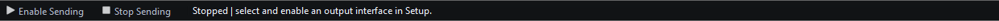

Quick Start
Begin with a small local workspace and keep external Sending stopped. When ready to connect equipment, use an isolated NMEA network and settings appropriate to that equipment.
Make a small workspace without transmitting
- Confirm Sending is stopped. Press F12 if the status is uncertain.
- Select Mode → Generate (Tx).
- In the Environment category, select Temperature (130312). Answer any source/instance prompts deliberately. Do not add a generator merely to make the instrument transmit.
- Enter a reasonable temperature such as 20 °C when Celsius is selected. Commit with Enter or by moving focus. Read the units beside the value.
- Select the widget in Object Tree and inspect Property Editor. The canonical temperature is 293.15 K even if the instrument displays 20.0 °C or 68.0 °F.
- Try a clearly invalid edit, then commit it. The current value returns if the edit is invalid.
- Save the exercise using Layout → Save Layout As… with a recognizable bench name.
Add a dynamic source only when needed
In Generate, select a suitable optional generator such as Date Time or Weather. Enable controls generator operation; Dispatch controls eligible property delivery. Add compatible instruments in either supported creation order. For an initial manual-value exercise, leave unnecessary generator sources disabled so they do not overwrite your edits with genuine new samples.
Authorize a real external test separately
- Review the transport matrix and choose a supported interface for the required protocol/direction.
- Open Setup, enter the real bench port/endpoint and correct configuration, Save, and verify the selected transport's status. Use receive-only inspection first when appropriate.
- Set individual instrument Enable and a suitable reporting interval. Start with a small number of instruments.
- Click Enable Sending once. While active, Start is disabled and Stop is available. Inspect the receiving device independently: confirm that it receives the intended values.
- Click Stop Sending or press F12. Verify the status returns to stopped before reconfiguration or disconnecting equipment.
If nothing happens
If Start is disabled, check mode, selected protocol, adapter policy and readiness before changing instrument values. If connected but no data arrives, check individual Enable, interval and supported encoder/mapping. If a local value will not stay edited, check whether an eligible generator is producing new samples. Do not repeatedly click Start as a recovery strategy; use the status, Application Log and connection troubleshooting.
Illustrated controls

Figure 6. The same temperature displayed as 20.0 °C. Click to enlarge.

Figure 7. Both authorization and transport readiness matter. This no-interface workspace remains stopped. Click to enlarge.
Introduction · System Requirements · Installation and First Launch · Viewer vs Generate · Loading the Default Layout · Connection Troubleshooting · Enable, Dispatch and Sending · Route Overview · Engineering Units
Help Home · Back to top